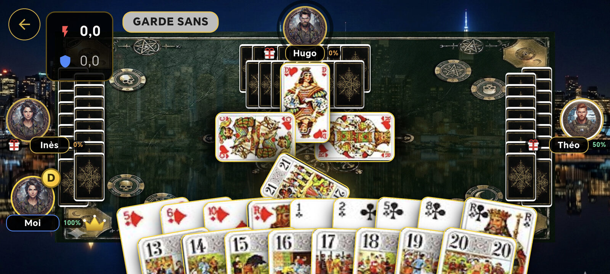

Accueil › Jouer au tarot en ligne
Une partie de tarot en un clic, dans votre navigateur
Pas d'installation, pas de fichier à télécharger : ouvrez la page de jeu et la partie démarre. Tarot Gothique 2026 se joue directement dans Chrome, Firefox, Edge ou Safari, sur ordinateur comme sur tablette.
Seul contre l'intelligence artificielle ou à plusieurs autour d'une table en ligne, le tarot gratuit est à portée de clic, à toute heure.

Aucune installation
Le jeu se charge dans l'onglet de votre navigateur, sur ordinateur, tablette ou téléphone.
Gratuit en solo
Les parties contre l'IA ne demandent ni jetons ni mise : jouez autant que vous voulez.
Multijoueur en temps réel
Tables publiques, salons privés entre amis et chat, avec le même compte que sur mobile.
Télécharger Tarot Gothique 2026 : Android, Web, Linux et Windows
Choisissez votre plateforme : la même expérience partout, en solo face à l’IA ou en ligne face à de vrais adversaires.
Linux
Archive .tar.gz pour PC Linux 64 bits (Ubuntu, Debian, Fedora…).
Télécharger pour Linux Guide d’installationCommencer en trois étapes
- Ouvrez la page de jeu : le tarot se charge en quelques secondes.
- Connectez-vous avec Google ou votre adresse e-mail, ou découvrez le jeu en invité.
- Choisissez 3, 4 ou 5 joueurs, en solo ou en ligne. La première donne vous explique les règles au fil du jeu.
Solo ou en ligne : deux façons de jouer
En solo, trois ou quatre adversaires virtuels prennent place autour de la table. Leur intelligence artificielle retient votre façon de jouer pour vous opposer une résistance à votre niveau. Ces parties sont entièrement gratuites, sans jetons.
En ligne, vous retrouvez de vrais joueurs à des tables de 3, 4 ou 5. Chaque partie se joue avec une mise en jetons, offerte au départ par le bonus de bienvenue puis par un bonus quotidien. Vous pouvez aussi créer un salon privé et y inviter vos amis.
Les règles appliquées automatiquement
Enchères, chien, écart, poignées, petit au bout, chelem : le jeu applique toutes les règles du tarot et calcule les points à votre place. À la fin de chaque donne, la feuille de marque détaille le score, ce qui en fait un bon moyen d'apprendre à compter.
Ce qu'il faut pour jouer
- Un navigateur récent : Chrome, Firefox, Edge ou Safari.
- Une connexion internet, même pour les parties solo.
- Un écran d'au moins 7 pouces est plus confortable ; sur téléphone, l'application Android est plus pratique.
Envie d'une version installée ?
Le jeu existe aussi en application pour Android, en version gratuite pour Linux, et en version PC Windows à 9,90 € en paiement unique, sans publicité, avec 100 000 jetons offerts. Le compte et les jetons sont partagés entre toutes les versions.
Rejoindre la communauté
Questions, recherche de partenaires, suggestions : retrouvez les joueurs de Tarot Gothique sur notre serveur Discord.
Questions fréquentes
Peut-on vraiment jouer au tarot en ligne sans payer ?
Oui. Les parties solo contre l'IA sont gratuites et sans jetons, et les parties en ligne se jouent avec des jetons offerts par le bonus de bienvenue et le bonus quotidien.
Faut-il télécharger quelque chose ?
Non. Le jeu fonctionne dans le navigateur. Une version Android, Linux et Windows existe pour ceux qui préfèrent une application installée.
Peut-on jouer au tarot en ligne avec des amis ?
Oui. Créez un salon privé depuis la page de jeu et invitez vos amis : chacun rejoint la table depuis son propre appareil.
À combien de joueurs se joue le tarot en ligne ?
À 3, 4 ou 5 joueurs. À 5, le preneur appelle un roi et joue avec un partenaire secret.